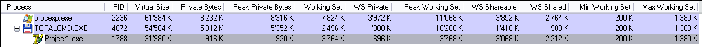
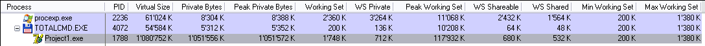
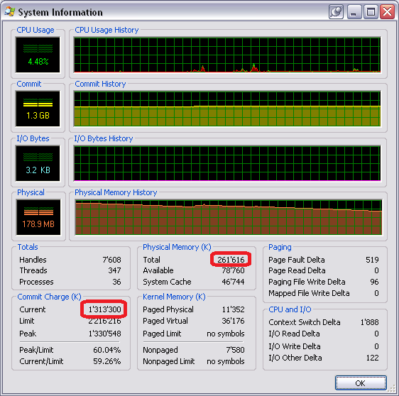
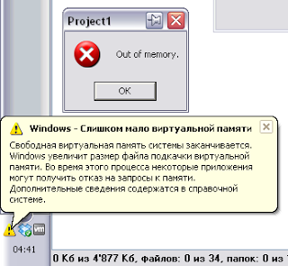
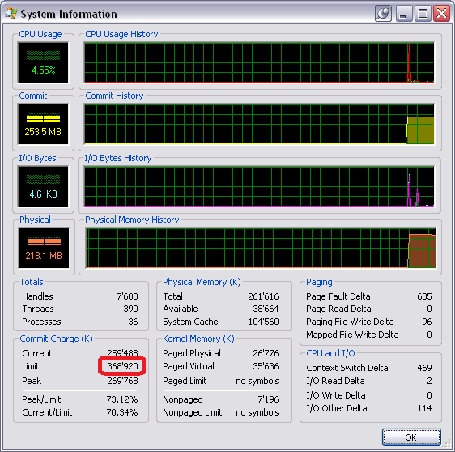

Миф №1: программа не может выделить больше памяти, чем установлено ОЗУ
Миф происходит от того, что люди не понимают, что адресное пространство программы теперь виртуально. Оно более не связано с оперативной памятью (вот уже более пятнадцати лет).
Этот миф легко разрушить непосредственным экспериментом. Я установил количество ОЗУ для виртуальной машины в 256 Мб, запустил её и выполнил такой код:
|
1 2 3 4 |
procedure TForm1.Button1Click(Sender: TObject); begin AllocMem(512 * 1024 * 1024); // выделить 512 Мб памяти end; |
Эта операция будет успешна (хотя и достаточно медленна). Операция была бы мгновенной, если бы мы использовали только резервирование (RESERVE), вместо полноценного выделения (COMMIT), но, возможно, тогда эксперимент не был бы таким зрелищным.
Итак, вот снимок экрана с запущенной программой до выделения:

и после (я нажал на кнопку аж два раза):

А вот и общая статистика системы:

Как вы видите, на машине установлено 261'616 Кб оперативной памяти. До выделения памяти наша программа занимала 31'980 Кб виртуальной памяти и 3'764 Кб оперативной. После выделения памяти программа стала занимать 1'080'752 Кб виртуальной памяти и 1'748 Кб физической. Вы также можете увидеть, что суммарное количество выделенной памяти в системе равно 1'313'300 Кб.
Итак, легенда разрушена прямым экспериментом.
Как известно, классический сюжет Mythbusters состоит из двух частей. Когда легенда разрушена, разрушители легенд подбирают такие условия, при которых происходило бы событие, упоминающееся в легенде.
Этим мы сейчас и займёмся: мы заходим в свойства системы и уменьшаем размер файла подкачки до 128 Мб. Таким образом, суммарный объём памяти, доступный системе и всем программам, будет равен 256 + 128 = 384 Мб.
Перезагрузка, запускаем тестовый пример снова и вот результат:

На этот раз наш вызов AllocMem проваливается с выбросом исключения EOutOfMemory. И Process Explorer показывает нам причину:

Статус мифа: busted.